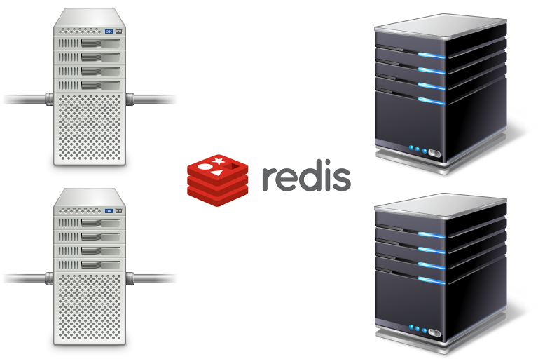

Channels 2.0
Artem Malyshev
@proofit404
Channels 1.0
3 years old design
no standard interface like WSGI
push everything over network
tricky deploy
django session abuse
3 years of experience
800+ commits
450+ issues closed
100+ contributors
40+ releases
No standard interface
PEP 333This wide variety of choices can be a problem for new Python users, because generally speaking, their choice of web framework will limit their choice of usable web servers, and vice versa.
Push everything over network
TBH, the main reason I like microservices is that I feel like my method calls are too fast and I’d prefer to throw in some latency.
Aaron Patterson (@tenderlove)
March 6, 2015
Tricky deploy
For hello world
For chat
Session usage
@channel_session@http_session@channel_and_http_session@channel_and_http_session_user_from_http@enforce_orderingGroups issues
Used wrong mostly
Exposed to user
Too complex to be fully implemented
asgi redis issues
Incomplete groups support
Daphne constanty pools redis
Does not support transparent scale
asgi rabbitmq issue
Have really complex implementation
Needs really careful production setup
But fully compatible with ASGI spec
Channels 1.0
Too complex to show incomming message counter
Actual requirements
Send to channel from everywhere
Simultaneous usage of sync and async code
React on websocket events on another machine
Cross-socket and cross-process communication
Moving the line
Run workers and Daphne in the same process
Store socket state locally
Remove "send-to-layer" conventions
Hello world deploy

Chat deploy
busy server will have much worth performance
we will randomly close websockets
ASGI Application
application = ProtocolTypeRouter({
"http": URLRouter([
url("^", DjangoViewSystem),
]),
"websocket": URLRouter([
url("^chat/$", AsyncChatConsumer),
]),
"mqtt": MqttTemperatureConsumer,
"email": EmailToRouter([
regex("@support.org", SupportTicketHandler),
]),
"sms": SMSFromRouter([
phone("+1", USTextHandler),
]),
})Results
Removes a lot of handshaking traffic
Groups are be hidden in the consumer
Links
Channels 2.0 DocsTowards Channels 2.0
Channels 2: October
Uvicorn: The lightning-fast asyncio server.